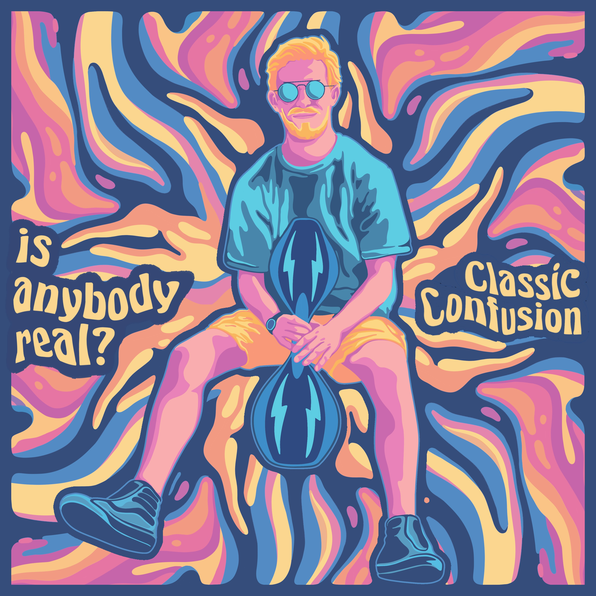

welcome to the site, stay a while
is anybody real? is my second album and latest release. I had a ton of fun making this one, especially when trying out some new plugins like MT PowerDrumKit and Surge XT. My favorite song from this album is a toss up between "Indomitable" and "Book of Life".
| Song | Last Updated | |
|---|---|---|
| letloosev | 02/04/2023 | |
| nananana | 02/04/2023 | |
| whatswrongwiththat | 02/23/2023 |
Website last updated 23 February 2023